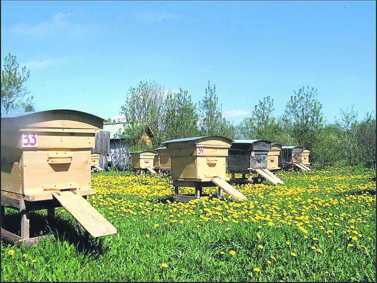
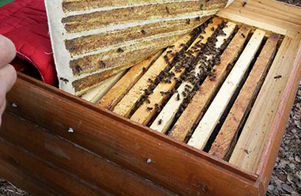
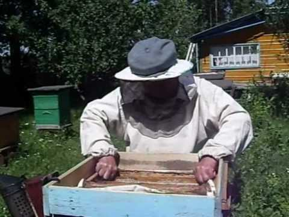
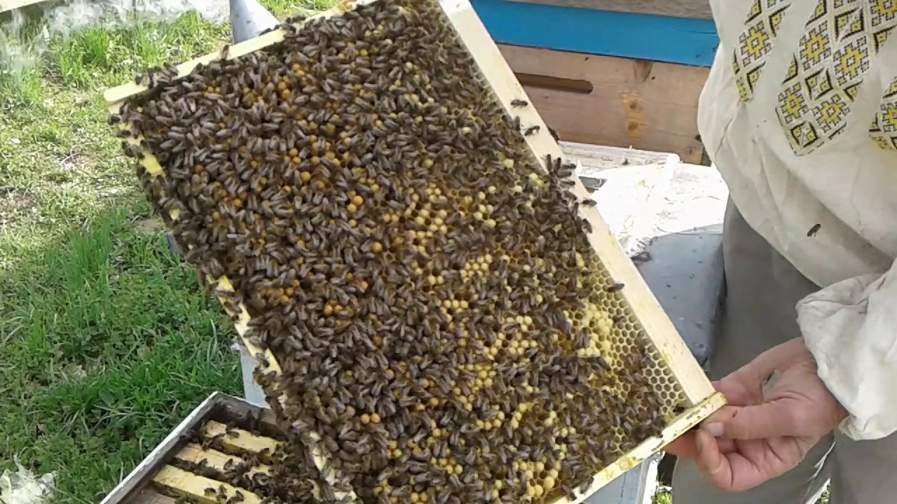
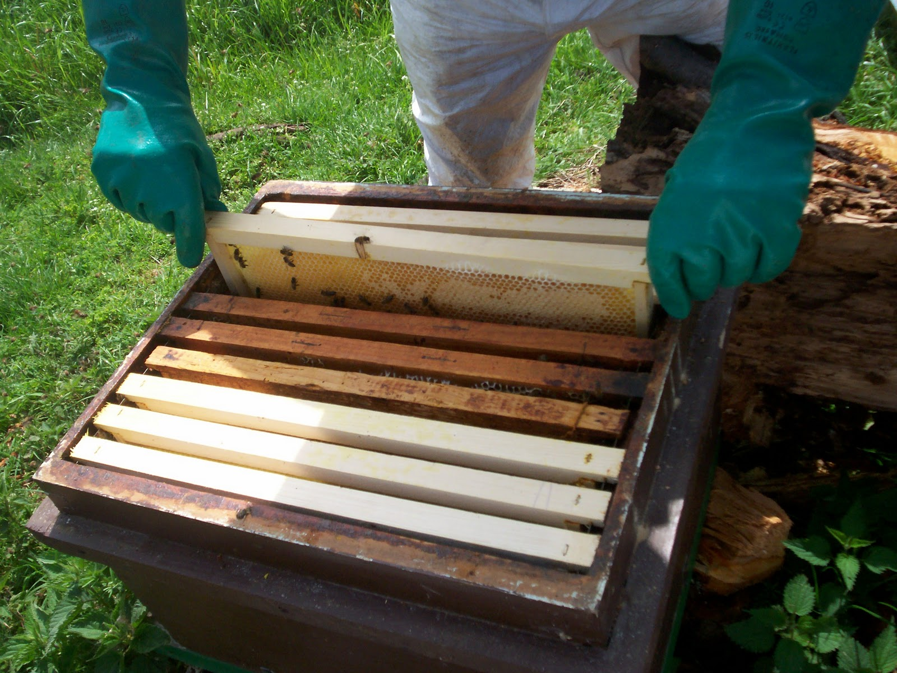

Гречишный мёд - фирменный мёд Киевщины!
Дата публикации 21.08.2018
Содержание:
- Вступление
- Особенности гречишного мёда
- Полезные свойства гречишного мёда
- Как мы получаем гречишный мёд
- Заключение
- Где купить?
Сегодня я расскажу вам про мёд, который является визитной карточкой Киевской области.
Это гречишный мёд - один из самых полезных и вкусных сортов мёда, по сути наш фирменный мёд и мы специализируемся в основном на нём. Многие фермеры в Киевской области выращивают гречиху в больших количествах, а у нас в Соломенском районе построен даже крупяной завод, который эту самую гречиху перерабатывает. Это позволяет нам каждый год получать гречишный мёд на своей пасеке в большом количестве!

Гречишный мёд трудно спутать с другими сортами мёда как по цвету, так и по вкусу. Он является одним из самых тёмных сортов мёда, хотя сам цвет может варьироваться от различных оттенков красного до тёмно-коричневого. Это зависит от количества минералов, содержащихся в мёде и чем их количество больше, тем темнее мёд. Вкус у данного сорта мёда тоже особенный, приятный, его трудно передать словами, нужно пробовать. Одно можно сказать точно - равнодушными к гречишному мёду вы не останетесь :)
Из-за особого состава гречишный мёд быстро кристализуется, но это никак не сказывается на его полезных свойствах и хранить его можно очень долго, желательно чтобы помещение было сухое и прохладное. Ну и не стоит его хранить в открытом виде, посуду, в которой хранится мёд, рекомендуется плотно закрывать.
Полезные свойства гречишного мёда.
В интернете и книгах можно найти массу информации о пользе гречишного мёда. Например гречишный мёд можно использовать как естественный консервант, поскольку он уничтожает бактерии. Кроме этого данный сорт мёда отлично подойдёт для профилактики простуды и гриппа, помогает укрепить иммунитет и восстановить силы. Лично мы считаем что в холодное время года гречишный мёд обязательно должен присутсвовать в рационе каждого человека.
Кроме этого гречишный мёд применяют в косметологии. Он отлично очищает кожу, снимает воспаления, ускоряет заживление ран и это натуральный природный продукт, который не имеет побочных эффектов в отличие от различной химии.
Полезные свойства гречишного мёда можно перечислять бесконечно, а всё благодаря особому составу. Гречишный мёд содержит большое количество витаминов, макро и микроэлементов:
- Цинк, магний, кальций, большое количество железа
- Витамины C, B и E
- Минералы
- Белки и аминокислоты
Как мы получаем гречишный мёд.
Каждый год мы вывозим свою пасеку на гречишные поля Святошенского района, чтобы собрать много вкусного и натурального гречишного мёда. Фермеры обычно не сажают гречиху в одном и том же месте несколько лет вподряд, поэтому каждое лето мы вывозим своих пчёл на новое место. Вот так выглядит наша передвижная пасека на фоне красот Киевской области:

Проверяем улей с пчёлами. Забираем рамки с мёдом с собой, а вместо них вставляем новые пустые рамки. Через некоторое время пчёлы их тоже заполнят гречишным мёдом:

Вокруг чистый воздух и красивейшие пейзажи Святошенского района. Но работа пчеловода это тяжёлый и каждодневный труд, без выходных и отпусков всё лето. Пчёл нельзя бросить и уехать отдыхать на море, они требуют ежедневного присмотра и ухода:

У пчёл тоже тяжёлая работа на протяжении всего лета - они добывают нектар и делают из него мёд.
Вот например наши пчёлы ползают вокруг летка улья:

Работа на выездной пасеке продолжается.
На данном фото запечатлён процесс замены рамки в улье:

А вот видео с нашей выездной пасеки:
В этой статье мы подробно рассказали о необыкновенных свойствах гречишного меда, а так же на своём примере показали как добывается такой мёд в Киевской области. Гречишный мёд это очень ценный и вкусный продукт высокого качества, который должен быть на столе в каждой семье!
Приобрести наш вкусный гречишный мёд можно на сайте в этом разделе, а так же в нашем магазине по адресу: Вета Почтовая — село, в Святошинском районе на Киевской области Украины, ул. Садова, дом 15-ый.